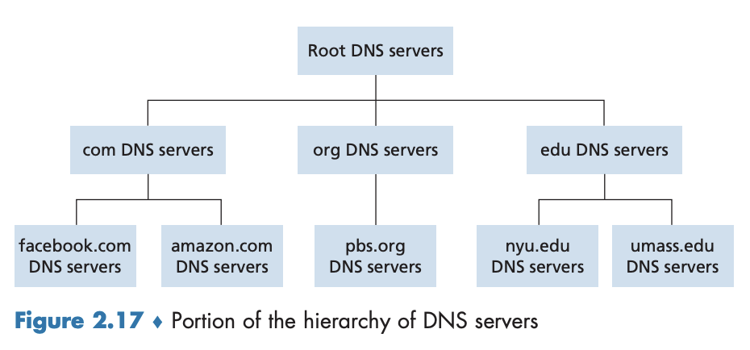

<!DOCTYPE html>
<html lang="en">
    <head>
        <meta charset="UTF-8">
        <meta name="viewport" content="width=device-width, initial-scale=1.0">
        <meta name="description" content="Urim Yang's personal blog about computer science, Rust programming, and networking.">
        <link rel="icon" href="/lime_icon.png"/>
        <title>Urim Yang's Blog</title>

        <!-- MathJax CDN -->
        <script src="https://cdnjs.cloudflare.com/ajax/libs/mathjax/2.7.7/MathJax.js?config=TeX-MML-AM_CHTML"></script>

        <script>
            MathJax = {
              tex: {
                inlineMath: [['$', '$'], ['\\(', '\\)']], // 인라인 수식 설정
                displayMath: [['$$', '$$'], ['\\[', '\\]']] // 블록 수식 설정
              }
            };
          </script>
          <script async src="https://polyfill.io/v3/polyfill.min.js?features=es6"></script>
          <script async src="https://cdn.jsdelivr.net/npm/mathjax@3/es5/tex-mml-chtml.js"></script>
        
        <style>
            * {
                margin: 0;
                padding: 0;
                box-sizing: border-box;
            }
    
            body {
                font-family: 'Arial', sans-serif;
                line-height: 1.6;
                background: #f8f8f8;
                padding: 2rem;
                scroll-behavior: smooth;
            }
    
            .container {
                max-width: 1200px;
                margin: 0 auto;
            }
    
            .section-block {
                background: white;
                border-radius: 15px;
                box-shadow: 0 5px 15px rgba(0,0,0,0.05);
                padding: 2rem;
                margin-bottom: 1.5rem;
                transition: transform 0.3s ease, box-shadow 0.3s ease;
            }

            /* 호버링 효과 추가 */
            .section-block:hover {
                transform: translateY(-5px);
                box-shadow: 0 8px 20px rgba(0,0,0,0.1);
            }

            /* Text Section에 특별한 패딩 추가 */
            .text-content {
                padding: 0 2rem;
                max-width: 800px;
                margin: 0 auto;
                text-align: justify;
            }

            /* 첫 줄(제목)과 마지막 줄 왼쪽 정렬 */
            .text-content p:first-child,
            .text-content p:last-child {
                text-align: left;
            }
    
            /* Content Styling */
            /* Lists */
            .section-block ul,
            .section-block ol {
                padding-left: 2rem;
                margin: 1rem 0;
            }

            .section-block ul ul,
            .section-block ol ol,
            .section-block ul ol,
            .section-block ol ul {
                margin: 0.5rem 0;
            }

            /* Inline Code */
            code:not(pre code) {
                background-color: #f5f5f5;
                padding: 0.2em 0.4em;
                border-radius: 3px;
                font-family: monospace;
            }

            /* Blockquote */
            blockquote {
                border-left: 4px solid #32CD32;
                padding-left: 1rem;
                margin: 1rem 0;
                color: #666;
                background-color: #f9f9f9;
                padding: 1rem;
            }

            /* Tables */
            table {
                width: 100%;
                border-collapse: collapse;
                margin: 1rem auto;
                text-align: center;
            }

            th, td {
                border: 1px solid #ddd;
                padding: 0.8rem;
            }

            th {
                background-color: #f5f5f5;
            }

            /* Images */
            img:not(.profile-image) {
                display: block;
                max-width: 100%;
                margin: 1rem auto;
                border-radius: 5px;
            }

            /* Code Blocks */
            pre {
                background-color: #f5f5f5;
                padding: 1rem;
                border-radius: 5px;
                overflow-x: auto;
                margin: 1rem 0;
            }

            pre code {
                font-family: monospace;
                display: block;
                line-height: 1.5;
            }

            .animation-section {
                padding: 1.5rem;
                cursor: pointer;
            }
    
            .communication-container {
                position: relative;
                width: 500px;
                height: 100px;
                margin: 0 auto;
                display: flex;
                justify-content: space-between;
                align-items: center;
            }
    
            .object {
                width: 50px;
                height: 50px;
                background: #32CD32;
                border-radius: 50%;
                position: relative;
            }
    
            .object::after {
                content: '';
                position: absolute;
                top: -5px;
                left: -5px;
                right: -5px;
                bottom: -5px;
                border: 2px solid #32CD32;
                border-radius: 50%;
                opacity: 0;
                animation: pulse 2s infinite;
            }
    
            @keyframes pulse {
                0% { transform: scale(1); opacity: 0.8; }
                100% { transform: scale(1.5); opacity: 0; }
            }
    
            .signal {
                position: absolute;
                height: 2px;
                background: #32CD32;
                top: 50%;
                opacity: 0;
            }
    
            .syn { width: 40%; left: 20%; animation: sendSignal 3s infinite; }
            .syn-ack { width: 40%; right: 20%; animation: sendSignal 3s infinite 1s; }
            .ack { width: 60%; left: 20%; animation: sendSignal 3s infinite 2s; }
    
            @keyframes sendSignal {
                0% { transform: scaleX(0); opacity: 0; }
                20% { transform: scaleX(1); opacity: 1; }
                40% { transform: scaleX(1); opacity: 1; }
                60% { transform: scaleX(0); opacity: 0; }
                100% { transform: scaleX(0); opacity: 0; }
            }
    
            .site-title {
                text-align: center;
                font-size: 1.8rem;
                margin-top: 1rem;
                color: #333;
            }
    
            .profile-section {
                display: flex;
                align-items: center;
                gap: 1.5rem;
                padding: 1rem;
                max-width: 800px;
                margin: 0 auto;
                cursor: pointer;
            }
    
            .profile-image {
                width: 90px;
                height: 90px;
                border-radius: 50%;
                object-fit: cover;
                border: 3px solid #32CD32;
                flex-shrink: 0;
            }
    
            .profile-info {
                flex: 1;
                text-align: left;
            }
    
            .profile-name {
                font-size: 1.4rem;
                color: #333;
                margin-bottom: 0.3rem;
            }
    
            .profile-status {
                font-size: 0.95rem;
                color: #666;
                font-style: italic;
                line-height: 1.4;
            }
    
            .footer {
                text-align: center;
                padding: 1.5rem;
                color: #666;
                font-size: 0.9rem;
            }
    
            .footer a {
                color: #32CD32;
                text-decoration: none;
            }
    
            /* 반응형 디자인 */
            @media (max-width: 768px) {
                body {
                    padding: 1rem;
                }
    
                .section-block {
                    padding: 1.25rem;
                }

                .text-content {
                    padding: 0 1rem;
                }
    
                .communication-container {
                    width: 300px;
                    height: 70px;
                }
    
                .object {
                    width: 35px;
                    height: 35px;
                }
    
                .site-title {
                    font-size: 1.4rem;
                }
            }
    
            @media (max-width: 600px) {
                .profile-section {
                    flex-direction: column;
                    text-align: center;
                    gap: 0.8rem;
                    padding: 0.8rem;
                }
    
                .profile-info {
                    text-align: center;
                }
    
                .profile-image {
                    width: 75px;
                    height: 75px;
                }

                .text-content {
                    padding: 0 0.8rem;
                }
            }
    
            @media (max-width: 480px) {
                .communication-container {
                    width: 220px;
                    height: 50px;
                }
    
                .object {
                    width: 25px;
                    height: 25px;
                }
    
                .site-title {
                    font-size: 1.2rem;
                }
            }

            /* 플로팅 Top 버튼 스타일 */
            .floating-top-button {
                position: fixed;
                bottom: 20px;
                right: 20px;
                width: 40px;
                height: 40px;
                background-color: #32CD32;
                color: white;
                border-radius: 50%;
                display: flex;
                align-items: center;
                justify-content: center;
                cursor: pointer;
                opacity: 0;
                visibility: hidden;
                transition: all 0.3s ease;
                box-shadow: 0 2px 5px rgba(0,0,0,0.2);
            }

            .floating-top-button.visible {
                opacity: 1;
                visibility: visible;
            }

            .floating-top-button:hover {
                background-color: #28a428;
                transform: translateY(-3px);
            }
        </style>
    </head>
<body>
    <div class="container">
        <!-- Animation Section -->
        <a href="/" style="text-decoration: none; color: inherit;">
            <div class="section-block animation-section">
                <div class="communication-container">
                    <div class="object"></div>
                    <div class="object"></div>
                    <div class="signal syn"></div>
                    <div class="signal syn-ack"></div>
                    <div class="signal ack"></div>
                </div>
                <h1 class="site-title">Initiate, Acknowledge, Establish</h1>
            </div>
        </a>

        <!-- Profile Section -->
        <a href="mailto:email@com" style="text-decoration: none; color: inherit;">
            <div class="section-block">
                <div class="profile-section">
                    
                    <div class="profile-info">
                        <h2 class="profile-name">Urim Yang</h2>
                        <p class="profile-status">A Trailblazer Exploring Unknown Computer Network Worlds</p>
                    </div>
                </div>
            </div>
        </a>

        <!-- Text Section -->
        <div class="section-block">
            <div class="text-content" id="textContent">
                <h1>2.4 DNS: 인터넷의 디렉터리 서비스</h1>
<hr />
<p>인터넷에서 호스트는 <strong>호스트 이름(hostname)</strong>(예: <code>www.google.com</code>)과 <strong>IP 주소(IP address)</strong>(예: <code>121.7.106.83</code>)로 식별된다. 사람들은 기억하기 쉬운 호스트 이름을 선호하지만, 라우터는 계층 구조를 가진 고정 길이의 IP 주소를 선호한다. 이를 조정하기 위해 <strong>DNS(Domain Name System)</strong> 가 사용된다.</p>
<p>※ ‘책임(authoritative)’ 서버는 ’권한 서버’로 번역되는 것이 옳으나, 여기서는 책의 내용을 그대로 따른다.</p>
<h2>2.4.1 DNS가 제공하는 서비스</h2>
<hr />
<h3>DNS의 개요</h3>
<p><strong>DNS(Domain Name System)</strong> 는 호스트 이름을 IP 주소로 변환하는 디렉터리 서비스이다. 또한,</p>
<ol>
<li>DNS 서버들의 계층구조로 구현된 분산 데이터베이스이고,</li>
<li>호스트가 분산 데이터베이스로 질의하도록 허락하는 애플리케이션 계층 프로토콜이다.</li>
</ol>
<p>→ <strong>DNS 서버</strong> 는 주로 BIND(Berkeley Internet Name Domain) 소프트웨어를 수행하는 유닉스 컴퓨터다. </p>
<p>→ DNS 프로토콜은 UDP상에서 수행되고 포트 번호 53을 이용한다.</p>
<p>→ DNS는 다른 애플리케이션 프로토콜들이 HTTP, SMTP, FTP 등 사용자가 제공한 호스트 이름을 IP 주소로 변환하기 위해 주로 사용한다.</p>
<h3>DNS의 작동 방식</h3>
<ul>
<li>예를 들어, 어떤 사용자의 호스트에서 수행되는 브라우저(HTTP 클라이언트)가 URL <code>www.someschool.edu/index.html</code>을 요청할 때를 무슨 일이 발생하는지를 생각해보자. </li>
<li>사용자의 호스트가 HTTP 요청 메시지를 웹 서버 <code>www.someschool.edu</code>로 보낼 수 있도록 사용자 호스트는 <code>www.someschool.edu</code>의 IP 주소를 얻어야만 한다.</li>
</ul>
<ol>
<li>같은 사용자 컴퓨터는 DNS 애플리케이션의 클라이언트 측을 수행한다.</li>
<li>브라우저는 URL로 부터 호스트 이름 <code>www.someschool.edu</code>를 추출하고 그 호스트 이름을 DNS 애플리케이션의 클라이언트 측에 넘긴다.</li>
<li>DNS 클라이언트는 DNS 서버로 호스트 이름을 포함하는 질의를 보낸다.</li>
<li>DNS 클라이언트는 결국 호스트 이름에 대한 IP 주소를 가진 응답을 받게 된다.</li>
<li>브라우저가 DNS로부터 IP 주소를 받으면, 브라우저는 해당 IP 주소와 그 주소의 80번 포트에 위치하는 HTTP 서버 프로세스로 TCP 연결을 초기화한다.</li>
</ol>
<p>→ DNS는 DNS를 사용하는 인터넷 애플리케이션에게 추가 지연을 준다는 것을 볼 수 있다.</p>
<p>→ 원하는 IP 주소는 ‘가까운’ DNS 서버에 캐싱되어 있어서 평균 DNS 지연 뿐만 아니라 DNS 네트워크 트래픽 감소에 도움을 준다.</p>
<h3>DNS가 제공하는 추가 서비스</h3>
<ul>
<li><strong>호스트 에일리어싱(host aliasing)</strong>: 복잡한 호스트 이름을 가진 호스트는 하나 이상의 별명을 가질 수 있다. 예를 들어, <code>relay1.west-coast.enterprise.com</code>같은 호스트 이름은 <code>enterprise.com</code>과 <code>www.enterprise.com</code> 같은 2개의 별칭을 가질 수 있다. 별칭이 아닌 호스트 이름은 <strong>정식 호스트 이름(canonical hostname)</strong> 이라고 한다. 별칭 호스트 이름은 정식 호스트 이름보다 대체로 기억하기 쉽다. DNS는 호스트의 IP 주소뿐만 아니라 제시한 별칭 호스트 이름에 대한 정식 호스트 이름을 얻기 위해 이용될 수 있다.</li>
<li><strong>메일 서버 에일리어싱(mail server aliasing)</strong>: 이메일 주소가 간단한 별칭을 사용할 수 있도록 한다. 예를 들어 밥의 전자메일 주소는 <code>bob@hotmail.com</code> 처럼 간단할 것이지만, 실제 핫메일 서버의 호스트 이름(정식 호스트 이름)은 <code>relay1.west-coast.hotmail.com</code>일 수 있다. DNS는 호스트의 IP 주소뿐만 아니라 제공된 별칭 호스트 이름에 대한 정식 호스트 이름을 얻기 위해 메일 애플리케이션에 의해 수행된다.</li>
<li><strong>부하 분산(load distribution)</strong>: 인기 있는 사이트(<code>cnn.com</code> 등)는 여러 서버에 중복되어 있어서, 각 서버가 다른 종단 시스템에서 수행되고 다른 IP 주소를 갖는다. 중복 웹 서버의 경우, 여러 IP 주소가 하나의 정식 호스트 이름과 연관되어 있다. DNS 데이터베이스는 이 IP 주소 집합을 갖고 있다. 클라이언트가 주소 집합으로 매핑하는 호스트 이름에 대한 DNS 질의를 하면, 서버는 IP 주소 집합 전체를 가지고 응답하는데, 각 응답에서의 주소는 순환식으로 보낸다. 클라이언트는 대체로 주소 집합 내부의 첫 번째 IP 주소로 HTTP 요청 메시지를 보내므로, DNS 순환 방식은 여러 중복 서버들 사이에서 트래픽을 분산하는 효과를 낸다(전자메일에서도 사용 가능).</li>
</ul>
<p>→ DNS는 인터넷의 핵심 시스템으로, RFC 1034와 RFC 1035에서 표준화되어 있으며, 지속적으로 발전하고 있다.</p>
<h2>2.4.2 DNS 동작 원리 개요</h2>
<hr />
<h3>DNS 질의와 응답 과정</h3>
<blockquote>
<p>❓ 사용자의 호스트에서 실행되는 어떤 애플리케이션(웹 브라우저나 메일 클라이언트)이 호스트 이름을 IP 주소로 변환하려 한다고 가정하자.</p>
</blockquote>
<p>과정은 아래와 같이 이루어진다.</p>
<ol>
<li>애플리케이션은 변환될 호스트 이름을 명시하여 DNS 측의 클라이언트를 호출한다.</li>
<li>사용자 호스트의 DNS는 네트워크에 질의 메시지를 보낸다
→ 질의, 응답 메시지는 포트 53 UDP 데이터그램을 통해 보내진다.</li>
<li>사용자 호스트의 DNS는 요청한 매핑에 해당하는 DNS 응답 메시지를 받는다.</li>
<li>매핑은 호출한 애플리케이션으로 전달된다.</li>
</ol>
<p>→ 사용자 호스트의 호출한 애플리케이션 DNS 관점에서 DNS는 간단하고 직접적인 변환 서비스를 제공하는 블랙박스다.</p>
<p>→ 실제로 블랙박스는 복잡한데, 전 세계에 분산된 많은 DNS 서버뿐만 아니라 DNS 서버와 질의를 하는 호스트 사이에서 어떻게 통신하는지를 명시하는 애플리케이션 계층 프로토콜로 구성되어 있다.</p>
<h3>중앙 집중형 DNS의 문제점</h3>
<blockquote>
<p>❓ DNS의 간단한 설계로 모든 매핑을 포함하는 하나의 인터넷 네임 서버를 생각할 수 있다. 이러한 중앙 집중 방식에서 클라이언트는 모든 질의를 단일 네임 서버로 보내고, DNS 서버는 질의 클라이언트에게 직접 응답한다. 이 방식은 간단하므로 매력적인데, 오늘날의 인터넷에서는 왜 이 방식을 쓰지 않을까?</p>
</blockquote>
<p>문제점은 다음과 같다.</p>
<ul>
<li><strong>서버의 고장</strong>: 만약 이 네임 서버가 고장 나면, 전체 인터넷이 작동하지 않는다.</li>
<li><strong>트래픽 양</strong>: 단일 DNS 서버가 모든 DNS 질의를 처리해야 한다(수많은 호스트에서 발생한 모든 HTTP 요청과 전자메일 메시지의 처리).</li>
<li><strong>먼 거리의 중앙 집중 데이터베이스</strong>: 단일 DNS 서버가 모든 질의 클라이언트로부터 ‘가까울’ 수만은 없다. 단일 서버를 뉴욕에 둔다면, 호주로부터의 모든 질의는 느리고 혼잡한 링크를 거쳐 지구 반대편까지 여행해야 한다. 이는 매우 심각한 지연을 일으킬 수 있다.</li>
<li><strong>유지관리</strong>: 단일 네임 서버는 모든 인터넷 호스트에 대한 레코드를 유지해야 한다. 이 중앙 집중 데이터베이스는 거대해지고 모든 새로운 호스트를 반영하기 위해 자주 갱신해야만 한다. 또한 중앙 집중 데이터베이스에 호스트를 등록할 수 있도록 사용자에게 허용하는 것과 관련된 인증 문제가 있다.</li>
</ul>
<p>→ 요약하면, 단일 DNS 서버에 있는 중앙 집중식 데이터베이스는 <code>확장성이 전혀 없다.</code> 결과적으로 DNS는 분산 구조를 갖도록 설계되었다.</p>
<h3>분산 계층 데이터베이스</h3>
<p></p>
<p>DNS는 그림 2.17처럼 확장성을 위해 여러 개의 계층적 DNS 서버로 분산되어 있으며, 크게 루트(root) DNS 서버, 최상위 레벨 도메인 네임(top-level domain, TLD) DNS 서버, 책임(authoritative) DNS 서버의 세 가지 유형이 존재한다.</p>
<blockquote>
<p>❓ 어떤 클라이언트가 호스트 이름 <code>www.amazon.com</code>의 IP 주소를 결정하기 원한다고 가정하자.</p>
</blockquote>
<p>순서는 다음과 같다.</p>
<ol>
<li>클라이언트는 루트 서버 중 하나의 접속한다.</li>
<li>루트 서버는 최상위 레벨 도메인 <code>com</code>을 갖는 TLD 서버 IP 주소를 보낸다.</li>
<li>클라이언트는 이 TLD 서버 중 하나에 접속하고, 서버는 도메인 <code>amazon.com</code>을 가진 책임 서버의 IP 주소를 보낸다.</li>
<li>클라이언트는 <code>amazon.com</code>의 책임 서버 중 하나로 접속한다.</li>
<li>서버는 호스트 이름 <code>www.amazon.com</code>의 IP 주소를 보낸다.</li>
</ol>
<p>먼저 세 가지 DNS 서버의 대해 더 자세히 알아보자.</p>
<p></p>
<ol>
<li><strong>루트 DNS 서버</strong>: 그림 2.18에 표기된 것처럼 1000개 이상의 루트 서버 인스턴스가 전 세계에 흩어져 있다. 루트 서버들은 13개의 다른 루트 서버 복사체이고, 12개의 다른 기관에서 관리되며, 인터넷 할당 번호 관리기관에 의해 조정된다. 루트 네임 서버는 TLD 서버의 IP 주소들을 제공한다.</li>
<li><strong>최상위 레벨 도메인(TLD) 서버</strong>: <code>.com</code>, <code>.org</code>, <code>.net</code>, <code>.edu</code>, <code>.gov</code> 등과 같은 상위 도메인과 <code>.kr</code>, <code>.uk</code>, <code>.fr</code>, <code>.ca</code>, <code>.jp</code> 같은 모든 국가의 상위 레벨 도메일에 대한 TLD 서버(또는 서버 클러스터)가 있다. 베리사인 글로벌 레지스트리 서비스사(Verisign Global Registry Services)는 <code>com</code> TLD에 대한 TLD 서버를 담당하고 있으며, 에듀코즈사(Educause)는 <code>edu</code> TLD에 대한 TLD 서버를 담당하고 있다. TLD를 지원하는 네트워크 인프라는 크고 복잡하다. TLD 서버는 책임 DNS 서버에 대한 IP 주소를 제공한다.</li>
<li><strong>책임 DNS 서버</strong>: 인터넷에서 접근하기 쉬운 호스트(예: 웹 서버와 메인 서버)를 가진 모든 기관은 호스트 이름을 IP 주소로 매핑하는 공개적인 DNS 레코드를 제공해야 한다. 기관의 책임 DNS 서버는 이 DNS 레코드를 갖고 있다. 또한 기관은 이 레코드를 갖도록 자신의 책임 DNS 서버의 구현을 선택할 수 있고, 일부 서비스 제공자의 책임 DNS 서버에 이 레코드를 저장하도록 비용을 지불한다. 대부분의 대학과 큰 기업들은 자신의 기본 책임 DNS 서버와 보조 책임 DNS 서버를 유지하고 구현한다.</li>
</ol>
<p>→ 또 다른 중요한 형태는 로컬 DNS 서버다.</p>
<ul>
<li>서버들의 계층 구조에 엄격하게 속하지는 않지만, DNS 구조의 중심에 위치</li>
<li>(대학이나 주거지역 ISP 같은) ISP들은 로컬 DNS 서버를 갖는다.</li>
<li>호스트가 ISP에 연결될 때, 그 ISP는 로컬 DNS 서버로부터 IP 주소를 호스트에게 제공한다.</li>
<li>호스트의 로컬 DNS 서버는 대체로 호스트에 ‘가까이’ 있다.</li>
<li>호스트가 DNS 질의를 보내면, 이 질의는 먼저 프록시로 동작하는 로컬 DNS 서버에게 전달되고, 그 로컬 DNS 서버는 이 질의를 DNS 서버 계층으로 전달한다.</li>
</ul>
<p>→ 총 4가지 서버가 어떻게 서로 질의와 응답을 하는지는 아래와 같은 두 가지 방법이 있다.</p>
<h4>재귀적 질의(Recursive Query)</h4>
<ul>
<li>클라이언트가 DNS 서버에게 질의할 때, 최종적인 응답을 받을 때까지 DNS 서버가 다른 서버에 계속해서 질의하는 방식이다. 이 과정에서 사용자는 중간 DNS 서버의 질의 과정을 볼 수 없으며, 최종 결과만 전달받는다.</li>
</ul>
<h4>반복적 질의(Iterative Query)</h4>
<ul>
<li>클라이언트가 DNS 서버에 질의하면, 서버는 직접 답을 알 경우 응답하지만, 모를 경우 다른 DNS 서버의 주소만 알려준다. 클라이언트는 다시 해당 서버에 질의하는 방식으로 원하는 정보를 찾는다.</li>
</ul>
<h4>예시 1: 재귀적 질의와 반복적 질의 동시 사용</h4>
<p></p>
<blockquote>
<p>❓ 호스트 <code>cse.nyu.edu</code>가 <code>gaia.cs.umass.edu</code>의 IP 주소를 원한다고 가정하자. 또한 <code>cse.nyu.edu</code>에 대한 NYU의 로컬 DNS 서버가 <code>dns.nyu.edu</code>이고 <code>gaia.cs.umass.edu</code>에 대한 책임 DNS 서버는 <code>dns.umass.edu</code>라고 가정하자.</p>
</blockquote>
<ol>
<li>호스트 <code>cse.nyu.edu</code>가 먼저 자신의 로컬 DNS 서버 <code>dns.nyu.edu</code>에게 DNS 질의 메시지를 보낸다. 질의에는 변환되어야 하는 호스트 이름, 즉 <code>gaia.cs.umass.edu</code>가 포함된다.</li>
<li>로컬 DNS 서버는 그 질의 메시지를 루트 DNS 서버에게 전달한다.</li>
<li>루트 DNS 서버는 <code>edu</code>를 인식하고, <code>edu</code>에 대한 책임을 가진 TLD 서버의 IP 주소 목록을 로컬 DNS 서버에게 보낸다.</li>
<li>로컬 DNS 서버는 질의 메시지를 TLD 서버로 보낸다.</li>
<li>TLD 서버는 <code>umass.edu</code>를 인식하고 <code>dns.umass.edu</code>로 이름 지어진 매사추세츠대학교의 책임 DNS 서버의 IP 주소로 응답한다.</li>
<li>로컬 DNS 서버는 직접 <code>dns.umass.edu</code>로 질의 메시지를 다시 보내고, <code>gaia.cs.umass.edu</code>의 IP 주소로 응답한다.</li>
</ol>
<p>→ 하나의 호스트 매핑을 얻기 위해 질의 메시지 네 번과 응답 메시지 네 번, 총 8번 DNS 메시지가 보내졌다.</p>
<p>→ <code>cse.nyu.edu</code>로부터 <code>dns.nyu.edu</code>로 보내는 질의는 자신을 대신하여 필요한 매핑을 얻도록 <code>dns.nyu.edu</code>에게 요구하므로 재귀적 질의지만, 다른 세 가지 질의는 모든 응답이 <code>dns.nyu.edu</code>에 직접 보내지므로 반복적 질의다.</p>
<p>→ 이론상, DNS 질의는 반복적이고 재귀적일 수 있으며, 일반 질의는 전형적으로 이 형식을 따른다.</p>
<h4>예시 2: 재귀적 질의만 사용</h4>
<p></p>
<blockquote>
<p>❓ TLD 서버는 호스트 이름에 대한 책임 서버를 안다고 가정하였지만, 일반적으로는 그렇지 않다. 대신에 TLD 서버는 호스트 이름에 대한 책임 DNS를 아는 중간 DNS 서버만 알고 있는 상황이다. 예를 들어, 매사추세츠대학교가 대학에 대한 DNS 서버, 즉 <code>dns.umass.edu</code>를 갖고 있다고 가정하자. 그리고 매사추세츠대학교의 각 학과도 자신의 DNS 서버를 갖고 있고, 각 학과 DNS 서버가 학과 안의 모든 호스트를 책임진다고 가정하자.</p>
</blockquote>
<ol>
<li>중간 DNS 서버 <code>dns.umass.edu</code>가 <code>cs.umass.edu</code>로 끝나는 호스트 이름을 가진 호스트에 대한 질의를 받는다.</li>
<li><code>cs.umass.edu</code>로 끝나는 모든 호스트에 대한 책임을 가진 <code>dns.cs.umass.edu</code>의 IP 주소를 <code>dns.nyu.edu</code>로 전달한다.</li>
<li>로컬 DNS 서버 <code>dns.nyu.edu</code>는 로컬 DNS 서버에게 원하는 매핑 결과를 돌려주는 책임 DNS 서버에게 질의를 보낸다.</li>
<li>로컬 DNS 서버는 요청한 호스트에게 그 매핑 결과를 전달한다.</li>
</ol>
<p>→ 이 경우에 전체 10번의 메시지를 보내게 된다.</p>
<h4>DNS 캐싱(DNS Caching)</h4>
<p>DNS 캐싱의 아이디어는 매우 간단한데, 질의 사슬에서 DNS 서버가 DNS 응답을 받았을 때(예: 호스트 이름을 IP 주소로 매핑하기) 그것은 로컬 메모리에 응답에 대한 정보를 저장할 수 있다.</p>
<p>아래 두 예시를 살펴보자.</p>
<p>1️⃣ 그림 2.19에서 로컬 DNS 서버 <code>dns.nyu.edu</code>는 임의의 DNS 서버로부터 응답을 받을 때마다 응답에 포함된 정보를 저장할 수 있다. 만약 호스트 이름과 IP 주소 쌍이 DNS 서버에 저장되고 다른 호스트 이름으로부터 같은 질의가 DNS 서버로 도착한다면, DNS 서버는 호스트 이름에 대한 책임이 없을 때조차 원하는 IP 주소를 제공할 수 있다.</p>
<p>→ DNS 서버는 어떤 기간(흔히 2일로 설정) 이후에 저장된 정보를 제거한다.</p>
<p>2️⃣ 호스트 <code>apricot.nyu.edu</code>가 <code>cnn.com</code>에 대한 IP 주소를 <code>dns.nyu.edu</code>에게 질의한다고 생각하자. 또한 몇 시간 후에 NYU의 다른 호스트 <code>kiwi.nyu.edu</code>가 <code>dns.nyu.edu</code>에게 같은 호스트 이름을 질의한다고 가정하자. 캐싱으로 인해 로컬 DNS 서버는 두 번째로 질의한 호스트에게 다른 DNS 서버로의 질의 없이 즉시 <code>cnn.com</code>의 IP 주소를 보낼 수 있다. 로컬 DNS 서버는 또한 TLD 서버의 IP 주소를 저장할 수 있다. 그러므로 로컬 DNS 서버가 질의 사슬에서 루트 DNS 서버를 우회하게 한다. </p>
<h2>2.4.3 DNS 레코드와 메시지</h2>
<hr />
<h3>DNS 자원 레코드(Resource Record, RR)</h3>
<p>DNS 분산 데이터베이스를 구현한 DNS 서버들은 호스트 이름을 IP 주소로 매핑하기 위한 <strong>자원 레코드(resource record, RR)</strong> 를 지원한다. 각 DNS는 하나 이상의 자원 레코드를 가진 메시지로 응답한다. 자원 레코드는 다음과 같은 필드를 포함하는 4개의 튜플(tuple)로 되어 있다.</p>
<pre><code>(Name, Value, Type, TTL)
</code></pre>
<ul>
<li><strong>Name</strong>: 질의된 도메인 또는 호스트 이름</li>
<li><strong>Value</strong>: Name에 대한 응답 값 (예: IP 주소, DNS 서버, 별칭 등)</li>
<li><strong>Type</strong>: 레코드의 종류를 나타내는 값</li>
<li><strong>TTL</strong>: 자원 레코드의 생존 시간(Time-To-Live)으로, 캐시에서 제거되는 시간을 결정한다.</li>
</ul>
<p>각 <code>Type</code>의 의미는 다음과 같으며, <code>Name</code>과 <code>Value</code>의 의미는 <code>Type</code>에 따라 달라진다.</p>
<ol>
<li>
<p><code>Type=A(Address Record)</code>: <code>Name</code>은 호스트 이름이고, <code>Value</code>는 호스트 이름에 대한 IP 주소다. 따라서 Type A 레코드는 표준 호스트 이름의 IP 주소 매핑을 제공한다.</p>
<ul>
<li>예제: <code>(relay1.bar.foo.com, 145.37.93.126, A)</code></li>
</ul>
</li>
<li>
<p><code>Type=NS(Name Server Record)</code>: <code>Name</code>은 도메인(예:<code>foo.com</code>)이고, <code>Value</code>는 도메인 내부의 호스트에 대한 IP 주소를 얻을 수 있는 방법을 아는 책임 DNS 서버의 호스트 이름이다.</p>
<ul>
<li>예제: <code>(foo.com, dns.foo.com, NS)</code></li>
</ul>
</li>
<li>
<p><code>Type=CNAME(Canonical Name Record)</code>:  <code>Value</code>는 별칭 호스트 이름 <code>Name</code>에 대한 정식 호스트 이름이다. 이 레코드는 질의 호스트에게 호스트 이름에 대한 정식 이름을 제공한다.</p>
<ul>
<li>예제: <code>(foo.com, relay1.bar.foo.com, CNAME)</code></li>
</ul>
</li>
<li>
<p><code>Type=MX(Mail Exchange Record)</code>: <code>Value</code>는 별칭 호스트 이름 <code>Name</code>을 갖는 메일 서버의 정식 이름이다. MX 레코드는 메일 서버의 호스트 이름이 간단한 별칭을 갖는 것을 허용한다.</p>
<ul>
<li>예제: <code>(foo.com, mail.bar.foo.com, MX)</code></li>
</ul>
</li>
</ol>
<h3>DNS 서버와 자원 레코드 저장 방식</h3>
<p>한 DNS 서버가 특별한 호스트 이름에 대한 책임 서버이면, 그 DNS 서버는 그 호스트 이름에 대한 Type A 레코드를 포함한다. 서버가 호스트 이름에 대한 책임 서버가 아니라면, 그 서버는 호스트 이름을 포함하는 도메인에 대한 Type NS 레코드를 포함할 것이고, NS 레코드의 <code>Value</code> 필드에 DNS 서버의 IP 주소를 제공하는 Type A 레코드도 포함할 것이다.</p>
<p>예를 들어, TLD 서버가 호스트 <code>gaia.cs.umass.edu</code>에 대한 책임 서버가 아닐 경우, 다음과 같은 NS 및 A 레코드를 포함할 수 있다.</p>
<ul>
<li>NS 레코드: <code>(umass.edu, dns.umass.edu, NS)</code></li>
<li>A 레코드: <code>(dns.umass.edu, 128.119.40.111, A)</code></li>
</ul>
<p>→ DNS 클라이언트는 최종 IP 주소를 찾기 위해 필요한 정보들을 단계적으로 획득할 수 있다.</p>
<h3>DNS 메시지</h3>
<p></p>
<p>그림 2.21 처럼 DNS 질의 및 응답 메시지는 공통적인 포맷을 사용하며, 크게 다음과 같은 섹션으로 구성된다. </p>
<ol>
<li><strong>헤더 영역(Header section)</strong>: 쳐음 12바이트를 차지하며, 여러 필드를 갖고 있다. 
<ul>
<li>식별자: 질의를 식별하는 16비트 숫자이며, 질의에 대한 응답 메시지에 복사되어, 클라이언트가 보낸 질의와 수신된 응답 간의 일치를 식별하게 한다.</li>
<li>플래그 필드: 여러 개의 플래그를 가지고 있으며 메시지의 성격을 결정한다. 각 플래그는 1비트를 차지한다.
<ul>
<li>질의/응답 플래그: <code>0</code>이면 질의, <code>1</code>이면 응답을 의미한다.</li>
<li>책임 플래그: DNS 서버가 질의 이름이 대해 책임 서버일 때 응답 메시지에 설정된다.</li>
<li>재귀 요구 플래그: DNS 서버가 레코드를 갖지 않을 때 재귀적 질의를 수행하기를 클라이언트(호스트 혹은 DNS 서버)가 원할 때 설정된다.</li>
<li>재귀 가능 플래그: DNS 서버가 재귀 질의를 지원하면 응답에 설정된다.</li>
</ul>
</li>
<li>개수 필드: 4개가 있으며, 이들 필드는 헤더 다음에 오는 데이터 영역의 네 가지 타입의 발생 횟수를 나타낸다. </li>
</ul>
</li>
<li><strong>질문 영역(Question section)</strong>: 현재 질의에 대한 정보를 포함한다.
<ol>
<li>질의되는 이름을 포함하는 이름 필드</li>
<li>이름에 대해 문의되는 질문 타입을 나타내는 타입 필드(이름과 연관된 호스트 주소(A 타입) 혹은 이름에 대한 메일 서버(MX 타입) 등).</li>
</ol>
</li>
<li><strong>답변 영역(Answer section)</strong>: DNS 서버로부터의 응답에서 원래 질의된 이름에 대한 자원 레코드를 포함한다. 응답으로 여러 개의 RR을 보낼 수 있는데, 호스트 이름은 여러 개의 IP 주소를 가질 수 있기 때문이다.</li>
<li><strong>책임 영역(Authority section)</strong>: 다른 책임 서버의 레코드를 포함한다.</li>
<li><strong>추가 영역(Additional section)</strong>: 다른 도움이 되는 레코드를 포함하고 있다. 예를 들어, MX 질의에 대한 응답에서 응답 필드는 전자메일 서버의 정식 호스트 이름을 제공하는 자원 레코드를 갖고 있다. 추가 영역은 메일 서버의 정식 호스트 이름에 대한 IP 주소를 제공하는 Type A 레코드를 포함한다.</li>
</ol>
<h3>DNS 데이터베이스에 레코드 삽입</h3>
<p>지금까지는 레코드가 DNS 데이터베이스로부터 어떻게 추출되는지에 초점을 맞추었지만, 여기서는 어떻게 레코드를 데이터베이스에 넣는지를 알아보자.</p>
<blockquote>
<p>❓ 네트워크 유토피아라고 하는 새로운 벤처 기업을 설립했다고 가정하자.</p>
</blockquote>
<p>→ 가장 먼저 하고자 하는 일은 도메인 네임 <code>networkutopia.com</code>을 등록기관에 등록하는 것이다.</p>
<p>→ <strong>등록기관(registrar)</strong>: 도메인 네임의 유일성을 확인하고, 그 도메인 이름을 DNS 데이터베이스에 넣고, 그 서비스에 대한 약간의 요금을 받는 상업기관</p>
<ul>
<li>1999년 이전에 네트워크 솔루션이라는 작은 등록기관이 <code>com, net, org</code> 도메인에 대한 도메인 이름 등록을 독점했으나, 현재는 고객 유치를 위해 경쟁하는 많은 등록 기관이 있으며, ICANN(Internet Corporation for Assigned Names and Numbers)이 이러한 여러 등록기관을 승인해준다.</li>
</ul>
<p>나머지 순서는 아래와 같다.</p>
<ul>
<li>도메인 네임 <code>networkutopia.com</code>을 어떤 등록기관에 등록할 때 등록기관에 주책임 서버와 부책임 서버의 이름과 IP 주소를 등록기관에 제공해야 한다.</li>
<li>이름과 IP 주소가 <code>dns1.networkutopia.com, dns2.networkutopia.com, 212.212.212.1, 212.212.212.2</code>라고 하자. 두 책임 DNS 서버 각각에 대해 등록기관은 Type NS와 Type A 레코드가 TLD <code>com</code> 서버에 등록되도록 확인한다. 특히 <code>networkutopia.com</code>에 대한 주책임 서버의 경우, 등록기관은 다음 2개의 자원 레코드를 DNS 시스템에 삽입한다.</li>
</ul>
<pre><code>(networkutopia.com, dns1.networkutopia.com, NS)
(dns1.networkutopia.com, 212.212.212.1, A)
</code></pre>
<ul>
<li>웹 서버 <code>www.networkutopia.com</code>에 대한 Type A 자원 레코드와 메일 서버 <code>mail.networkutopia.com</code>에 대한 Type MX 자원 레코드가 책임 DNS 서버에 등록되는 것을 확인해야만 한다.</li>
<li>모든 단계가 끝나면, 웹사이트 방문과 전자메일 발송이 가능해진다.</li>
</ul>
<h3>DNS에 관한 총 정리: 예시</h3>
<blockquote>
<p>❓ 호주에 있는 앨리스가 <code>www.networkutopia.com</code> 웹 페이지를 보고자 한다고 가정하자.</p>
</blockquote>
<ol>
<li>그녀의 호스트는 먼저 DNS 질의를 자신의 로컬 DNS로 보내고, 로컬 DNS 서버는 TLD <code>com</code> 서버에 접속할 것이다(주소가 캐싱되어 있지 않으면 루트 DNS 서버에 접속해야 함).</li>
<li>이 TLD 서버는 위에 Type NS와 Type A 자원 레코드를 가지고 있는데, 등록기관이 이들 자원 레코드를 모든 TLD <code>com</code> 서버에 삽입했기 때문이다.</li>
<li>TLD <code>com</code> 서버는 앨리스의 로컬 DNS 서버로 두 자원 레코드를 포함하는 응답을 보낸다.</li>
<li>로컬 DNS 서버는 <code>www.networkutopia.com</code>에 대응되는 Type A 레코드를 요구하는 DNS 질의를 <code>212.212.212.1</code>에게 보내면, 이 레코드는 요구하는 웹 서버, 즉 <code>212.212.71.4</code>의 IP 주소를 제공한다.</li>
<li>로컬 DNS 서버는 앨리스 호스트에게 이 레코드를 전달한다.</li>
<li>앨리스의 브라우저는 <code>212.212.71.4</code> 호스트로 TCP 연결을 초기화하고 그 연결고 HTTP 요청을 보낸다.</li>
</ol>

            </div>
        </div>
    </div>

    <div class="floating-top-button" id="topButton">↑</div>

    <footer class="footer">
        <p>&copy; 2024 Urim Yang. Connection established.</p>
        <p>Powered by LimeDocs</p>
    </footer>

    <script>
        const topButton = document.getElementById('topButton');
        
        // 스크롤 위치에 따라 버튼 표시/숨김
        window.addEventListener('scroll', () => {
            if (window.scrollY > 300) {
                topButton.classList.add('visible');
            } else {
                topButton.classList.remove('visible');
            }
        });

        // 클릭 시 최상단으로 이동
        topButton.addEventListener('click', () => {
            window.scrollTo({
                top: 0,
                behavior: 'smooth'
            });
        });
    </script>
</body>
</html>